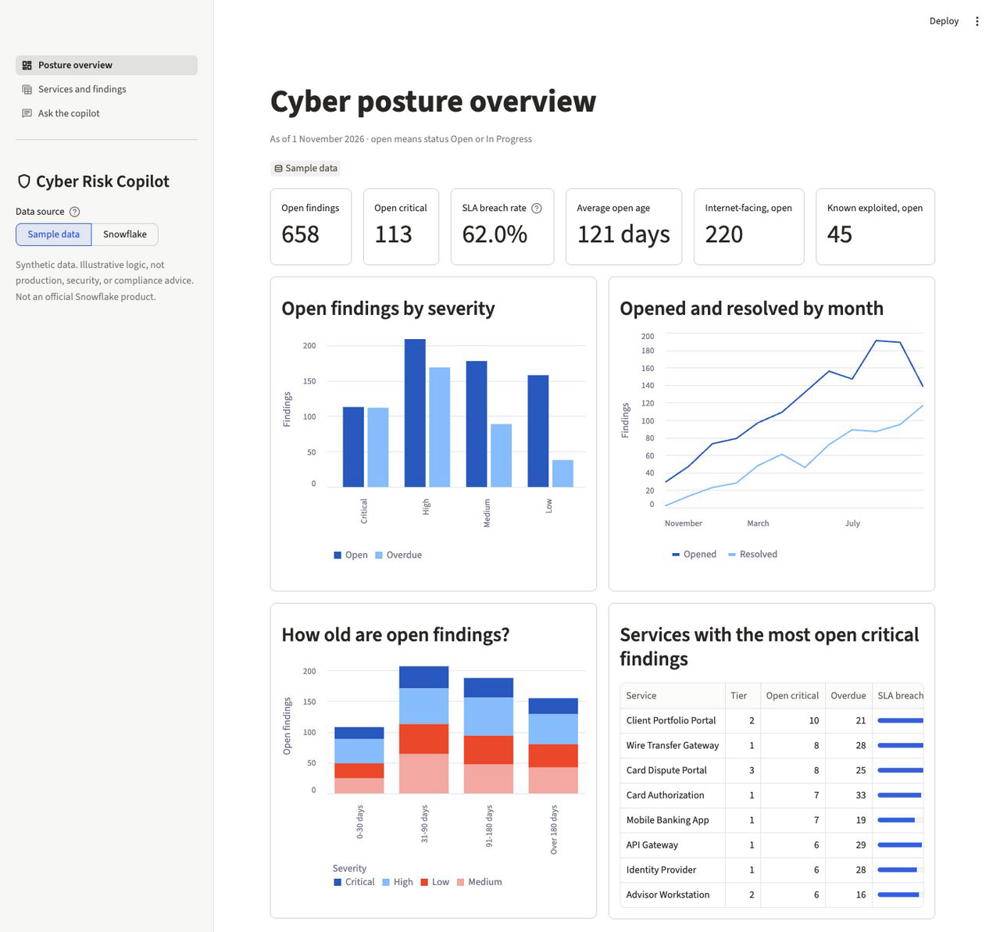
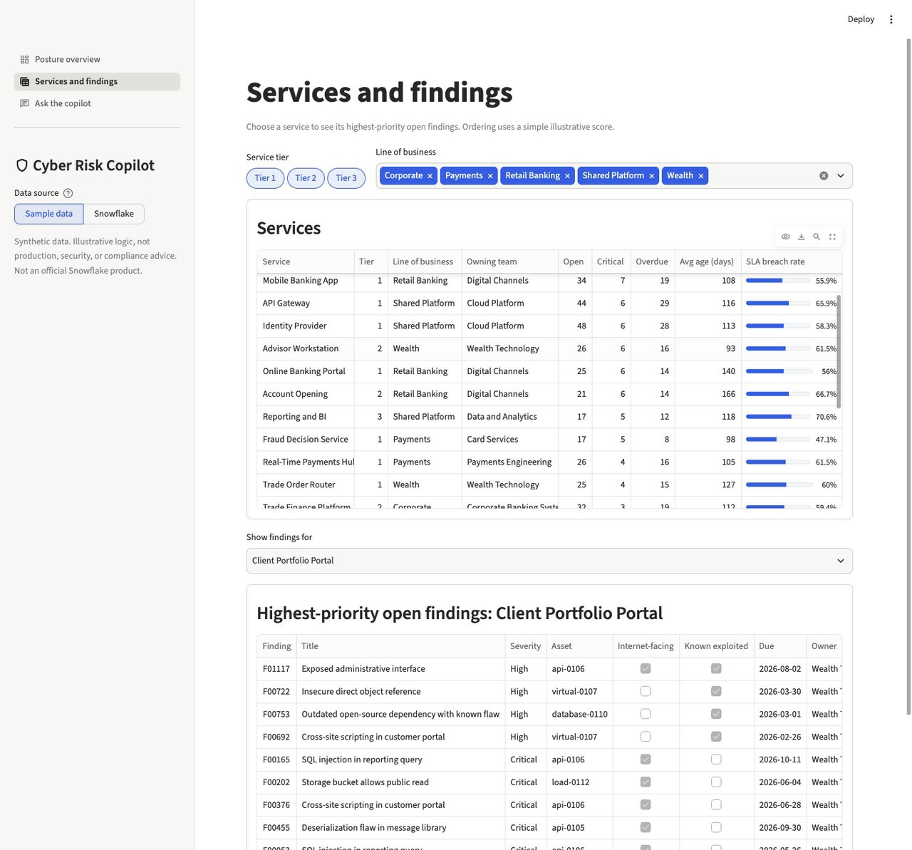
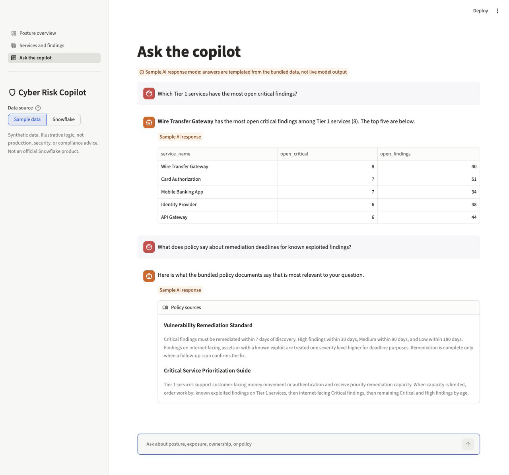

See the finished result
Three screens make up the app. Each caption names the Snowflake capability behind it when the app runs in your own account.



How it works
- Synthetic data. About 1,400 findings across 24 business services, 221 assets and 8 teams, plus 10 short policy documents. Generated with a fixed seed, so the numbers match every run.
- Semantic view. One
CYBER_POSTUREsemantic view defines metrics such as open critical findings and SLA breach rate once. - Cortex Analyst and Cortex Search. Analyst turns questions into SQL over the semantic view. Search finds the relevant policy passages.
- Cortex Agent. Chooses the right tool for each question, or uses both, and returns the answer with its data and sources.
- Streamlit app. Runs locally on sample data with no account, or against Snowflake, including as Streamlit in Snowflake.
Try it
- No account: Python 3 with pip; about 5 minutes. Runs on bundled sample data.
- Your Snowflake account: about 15 minutes. Needs Cortex Analyst, Cortex Search and Cortex Agents in your region. Uses one XSMALL warehouse with 60-second auto-suspend; expected compute is small, and the README gives an estimate and a cleanup script.
- Least privilege: setup creates a dedicated role with only the grants the example needs.
Good to know
- Sample-mode answers are templated, not model output, and cover the suggested questions only.
- The priority score on the findings page is a simple illustrative formula, not a recommended scoring method.
- Results shown, such as the SLA breach rate, come from a synthetic data set and do not represent any real organisation.